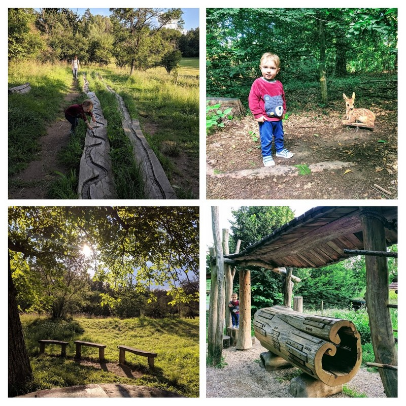
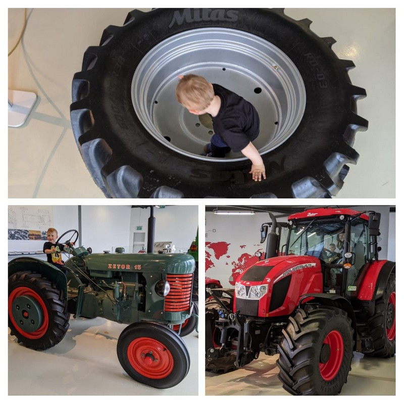
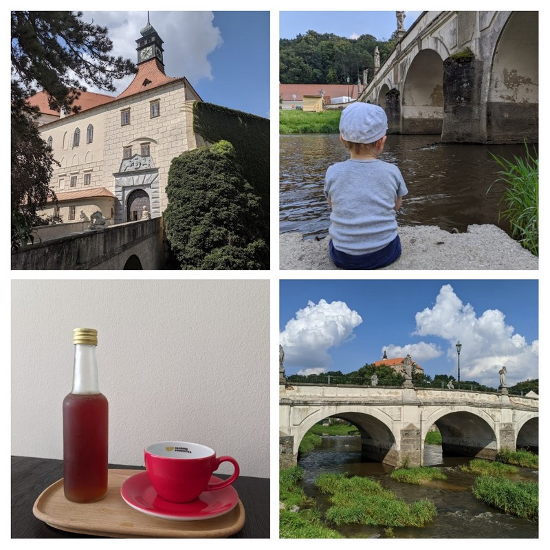
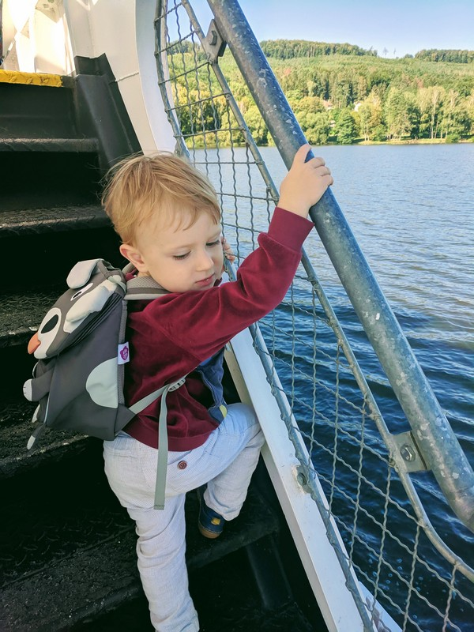
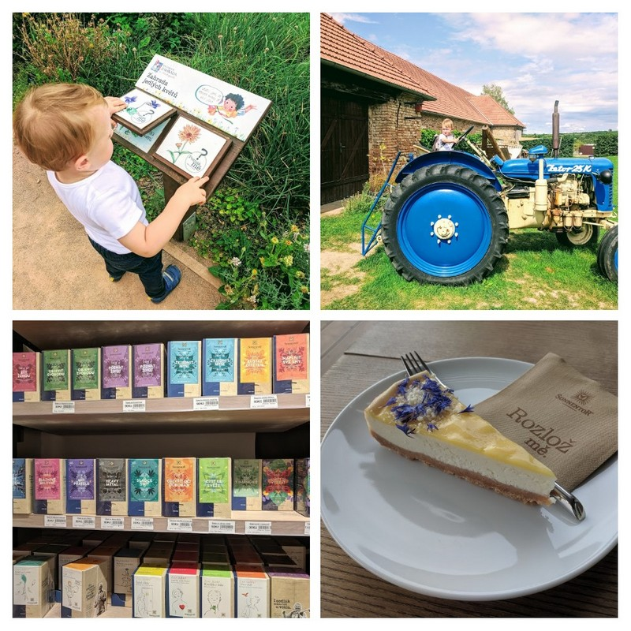

To, co mě nejvíc drží v těchto nelehkých časech, jsou vzpomínky na letošní léto. Ta možnost užívat si zase všeho bez omezení, se ukázala být v kontextu posledních dní draze vykoupenou, ale čas už zpátky nikdo nevrátí a o tom to dnes ani být nemá. Naopak můžete brát tento příspěvek opět jako inspiraci, na jaká místa se v Brně či okolí s dětmi vydat, až to zase bude aspoň trochu možné.
Lesní naučná stezka U Jezírka
Naučná stezka U Jezírka byla pro nás všechny příjemným překvapením. Nachází se mezi Soběšicemi a Útěchovem, je tak akorát dlouhá, aby ji dvouletý capart zvládnul i bez kočárku (s kočárkem si tam ostatně moc neškrtnete) a hlavně mi přišla taková “dobrodružná” - tím, jak místy vedla trochu divočinou :D Zahrnuje 8 zastavení, přičemž už od toho prvního, kde se nachází obří dendrofon, je problém děti odtrhnout :) Po cestě ale potkáte i spoustu dalších zajímavých “exponátů”. Mně třeba naprosto okouzlily makety zvířátek, která vypadají téměř jako živá! Naučná stezka ústí v překrásném jabloňovém sadu, kde na vás čeká zlatý hřeb - dvě dlooouhatánská dřevěná korýtka, do nichž můžete pumpovat vodu a pozorovat průtok. Zábava na hodně dlouhou dobu zaručena :)

Zetor Gallery
Je to legrační, jak se s dětmi mění místa, která navštěvujete. Asi by mě nikdy nenapadlo, že jednou skončím v muzeu traktorů a ještě si budu pochvalovat, jak to je pěknej vejlet :D Zetor Gallery je ale jedním z těch míst, kam s dětmi prostě aspoň jednou za život musíte. Už jen proto, že si tu prakticky všechny vystavené modely traktorů děti můžou vyzkoušet - vlézt si dovnitř, pomačkat všechna tlačítka, zatáhnout za všechny páčky… Maminky chlapečků asi chápou :D

Náměšť nad Oslavou
Cílem našeho dalšího celodenního výletu se stalo toto malebné městečko, které má co nabídnout jak dětem, tak dospělým. Při jeho návštěvě rozhodně nesmíte vynechat unikátní kamenný most (pro děti je lákavá především možnost sejít až na břeh řeky, pozorovat kachny a podobně) a samozřejmě zámek, tyčící se na kopci, s přilehlým parkem. Výlet můžete završit stejně jako my v příjemné kavárně Pohodička, která funguje jako tréninkové centrum pro osoby s mentálním postižením. Nejen že si tu můžete dát lahodnou kávu, ale najdete tu i dětský koutek a v zahradní části pískoviště a dřevěný domeček, kde se zatím můžou zabavit děti. Win-win :-)

Parníkem po Prýglu
Léto a návštěva Brněnské přehrady k sobě tak neodmyslitelně patří, až si říkám, že nechápu, že jsme Oliho na parník nevzali už dřív. Konečně ale asi dospěl do věku, kdy to dokáže opravdu docenit. Že pro něj byla plavba velkým zážitkem usuzuju i proto, že když si ve vaně hraje se svým plastovým parníčkem, vždycky vypráví, že v něm sedí maminka, Olík a teta Jana s Waltíkem :D, kteří se za tímto dobrodružstvím vydali spolu s námi. Pro caparty Oliho věku doporučuju dojet do zastávky “Rokle” (plavba sem trvá cca 30 minut, což je tak akorát, než dítě začne bořit loď 8-), kde naleznete prima hřiště.

Sonnentor Čejkovice
Návštěvu Sonnentoru nám doporučili prarodiče a byli jsme opravdu nadšení. Nejen díky tomu, že jeli s námi, takže jsme se mohli s Péťou zúčastnit i krátké exkurze, kde se dozvíte pár zajímavostí o firmě jako takové, jejich filosofii i procesu výroby. Celé místo je doslova dětským rájem. Najdete tu pískoviště s lehátky pro unavené rodiče :-), modrý retro traktor, bylinkovou zahrádku i s konvičkami a přívodem vody, aby děti mohly zalévat, i různé edukativní panely o bylinkách. Zlatým hřebem pak pro nás byla hra, kterou si může každý návštěvník zahrát - panel s hracími kartičkami naleznete u vchodu do kavárny. Vašim úkolem je v areálu nalézt několik čísel, která dohromady tvoří číselný kód od truhlice s pokladem, v níž na úspěšné luštitele čeká voňavé překvapení :-) A když jsme u té vůně - určitě nevynechejte návštěvu místní kavárny, asi nejvoňavějšího a nejzenovějšího místa na světě :D Ochutnat zde nějaký z místních čajů a lákavých domácích dezertů je doslova nutnost!
